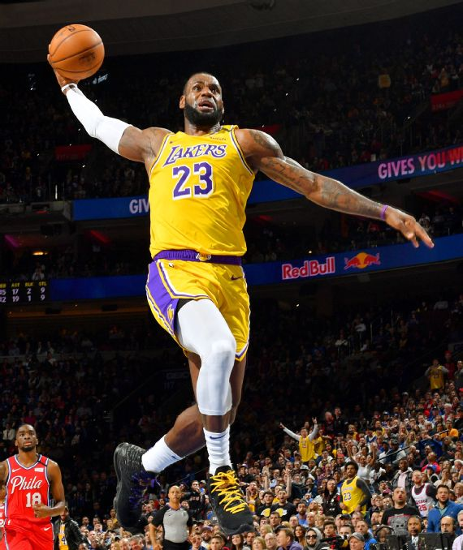
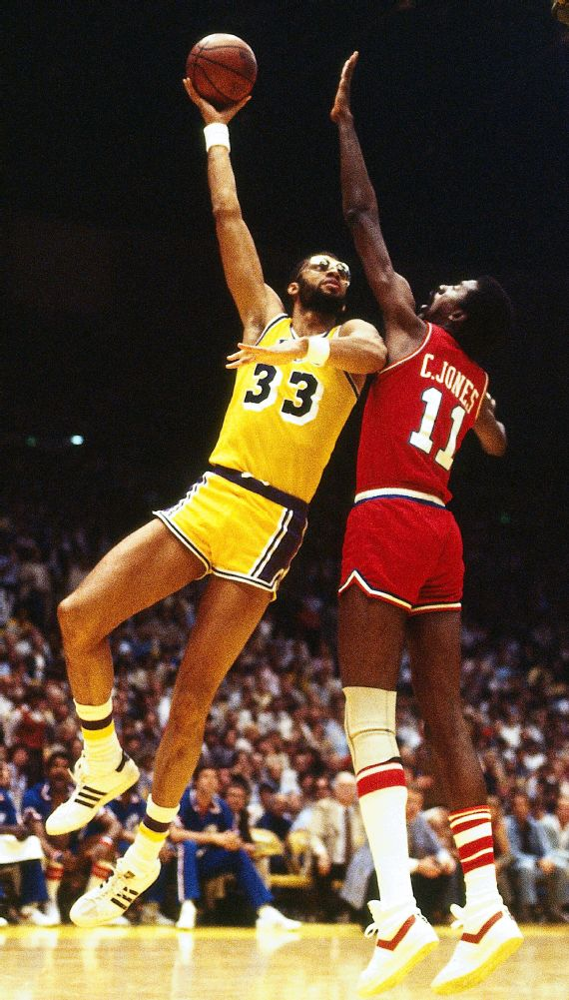
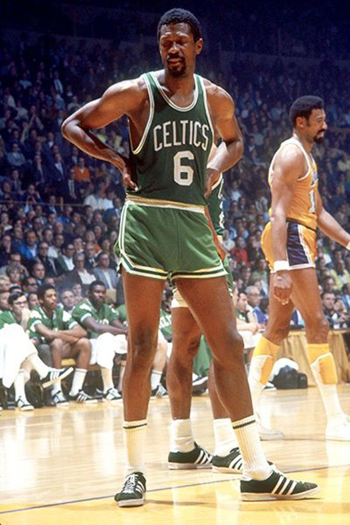

Top 5 NBA Players Of All Time

Michael "AIR" Jordan
The greatest player of all time. Jordan led the Bulls to six NBA championships, winning six Finals MVP awards and five regular-season MVP honors while becoming a global icon on and off the floor.

Lebron "King" James
The four-time MVP and three-time champion has reinvented how an athlete's prime should be viewed. James' game is built on power, but his passing ability might be his strongest skill. That's why he's the King.

Kobe "Mamba" Bryant
The five NBA Champs, the 81-point game, the 60-point finale,the 20 seasons all with the same franchise. Bryant's lasting legacy is his mental edge and burning desire to master the sport.

Kareem Abdul-Jabbar
No one in NBA history can match Abdul-Jabbar's lengthy list of achievements. He won a record six MVP awards and was a 19-time All-Star. He won six championships. His signature move place him in the throne.

William Felton "Bill" Russel
The greatest winner in basketball history, Russell claimed 11 titles in 13 years by turning the Celtics into a defensive juggernaut. Those qualities also helped him earn five MVP awards